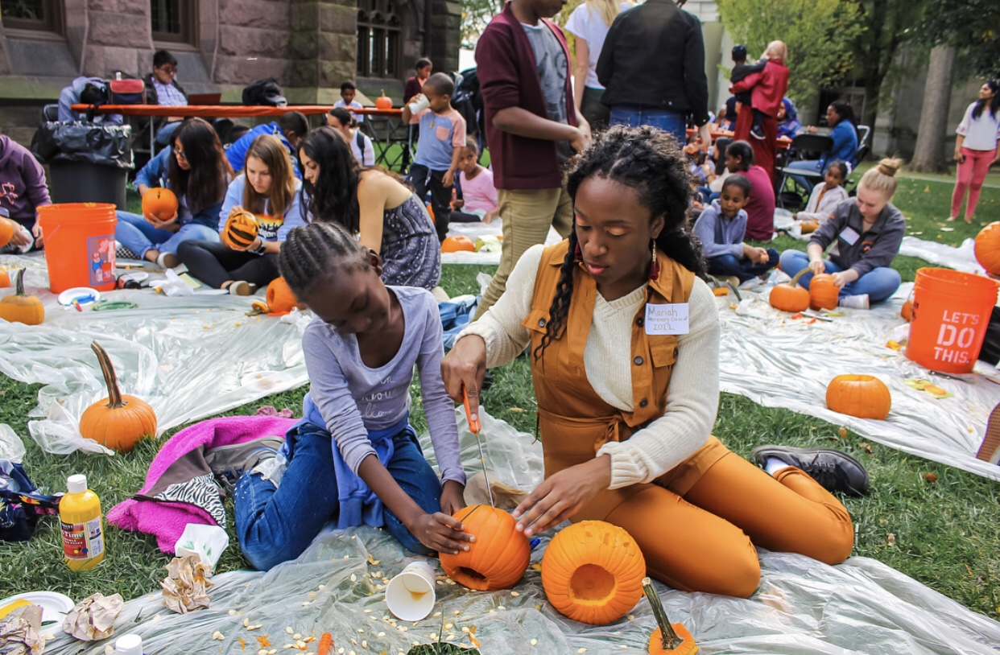
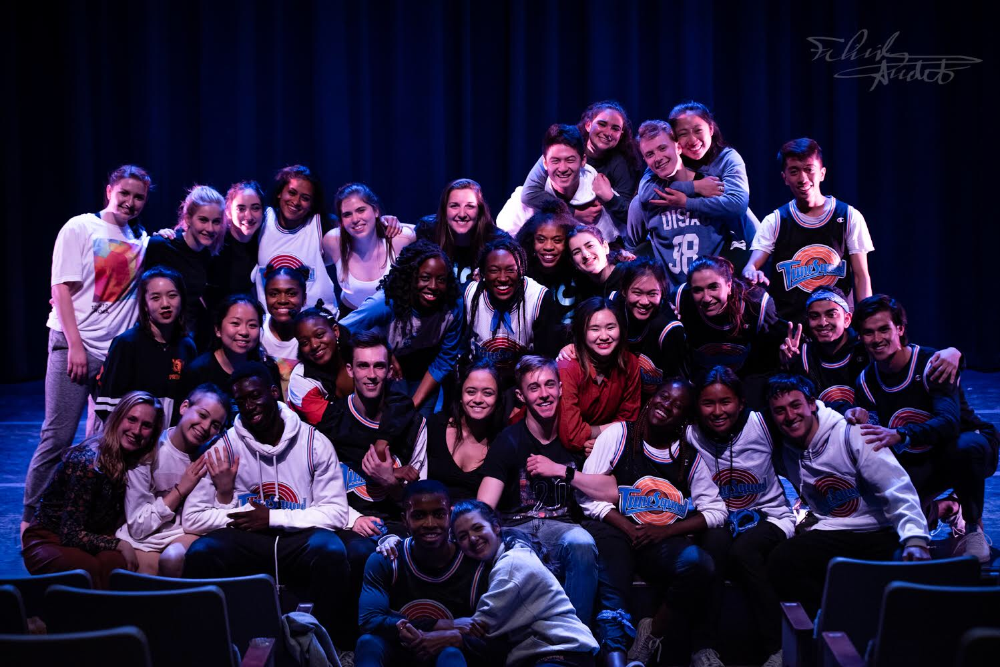

Mariah Crawford's Portfolio
A Princeton University student pursuing a Bachelor of Science in Engineering (BSE) in Computer Science and certificates in Entrepreneurship and Theater. Passionate about using her creativity to explore the intersections of technology and entrepreneurship. Exhibits strong computer programming skills in Java and Python languages and is a highly motivated individual and a quick learner. Demonstrates great leadership skills through her involvement as an officer in the diSiac Dance Company, Student Government (USG), and the Entrepreneurship Club.

Click here to get a random fun fact about Mariah:
More Information:
Projects
Software Product Print Portfolio Project, Sonorines Research Project
External Links
Click here to visit my LinkedIn Page
Click here to visit my GitHub Profile
About Me: Hobbies and Interests
I'm passionate about volunteering and offering guidance and leadership to younger students. Through Student Government I am able to coordinate with other organizations to organize and participate in volunteer events. Also, I was a mentor to many incoming college freshmen as a leader in Princeton University's Freshmen Orienation Program, Community Action, in which we engaged in community service while building a sense of community and belonging among the students.

Another interest of mine is dancing. I can often be found in the dance studio, working on new choregraphy or practicing for the upcoming dance performance. I always knew I wanted to try a new activity in college, so I decided to audition for a dance company despite having had no prior dance experience. However, I was accepted into the company and continued to grow as a leader and dancer over the years. For example, when I was a freshman, former officers encouraged me to run for an officer position and I was granted opportunities for growth, such as the chance to co-choreograph an audition piece and choreograph workshops.
